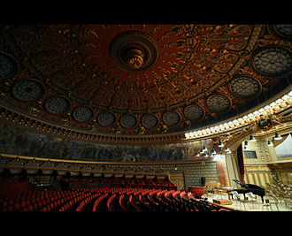
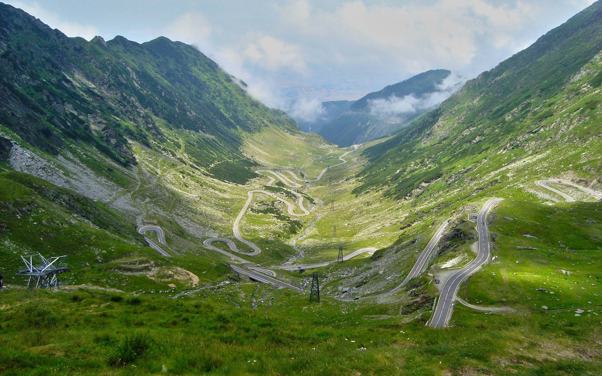

 <html>
<body>
<head><title>Obiective turistice din Romania</title></head> >
<style>
body{
      background-image:url('funda.jpg');
      background-repeat: no-repeat;
      background-attachment: fixed;
      background-size: cover;
}
</style>
<font color="E6E6FA" size=5>
<CENTER><h1><u>Locuri de vizitat in Romania:</u></h1></CENTER>
</FONT>
<center>
<table>
<tr>
<td>       
<td><a href="Salina Turda.html"></a>
<td>       
<td><a href="Chipul lui decebal.html"></a>
<td>
</tr>

<tr>
<CENTER>
<td>       
<td bgcolor="E6E6FA"><B><center><font size=2 color="CD5C5C">SALINA TURDA</font></center></B>
<td>       
<td bgcolor="E6E6FA"><B><center><font size=2 color="CD5C5C">CHIPUL LUI DECEBAL</font></center></B>
<td>
</CENTER>
</tr>


<tr>
<td><a href="Vulcanii noroiosi.html"></a>
<td>
<td><a href="Cimitirul vesel.html"></a>
<td>
<td><a href="Ateneul Roman.html"></a>
</tr>


<tr>
<CENTER>
<td bgcolor="E6E6FA"><B><center><font size=2 color="CD5C5C">VULCANII NOROIOSI</font></center></B>   
<td>
<td bgcolor="E6E6FA"><B><center><font size=2 color="CD5C5C">CIMITIRUL VESEL</font></center></B>     
<td>
<td bgcolor="E6E6FA"><B><center><font size=2 color="CD5C5C">ATENEUL ROMAN</font></center></B>
</CENTER>
</tr>
</table>
</center>
<FONT COLOR="E6E6FA" SIZE=2>
<p>(click pe poze pentru mai multe detalii)</p>
</FONT>
<HR>
<center>
<FONT COLOR="000000" SIZE=4>
<p><u><b>Date generale despre ROMANIA(click pe poza):<a href="Date generale.html"></a></b></u></P>
</font>
</center>


</body>
</html>